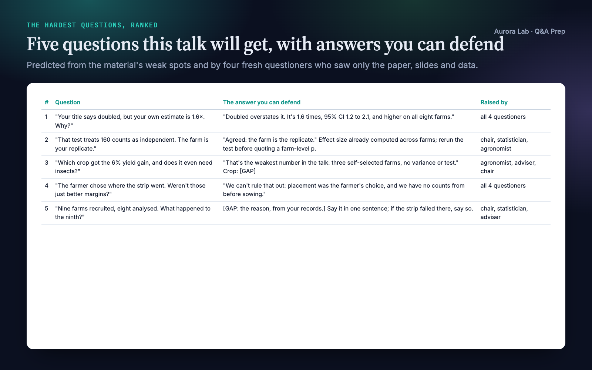
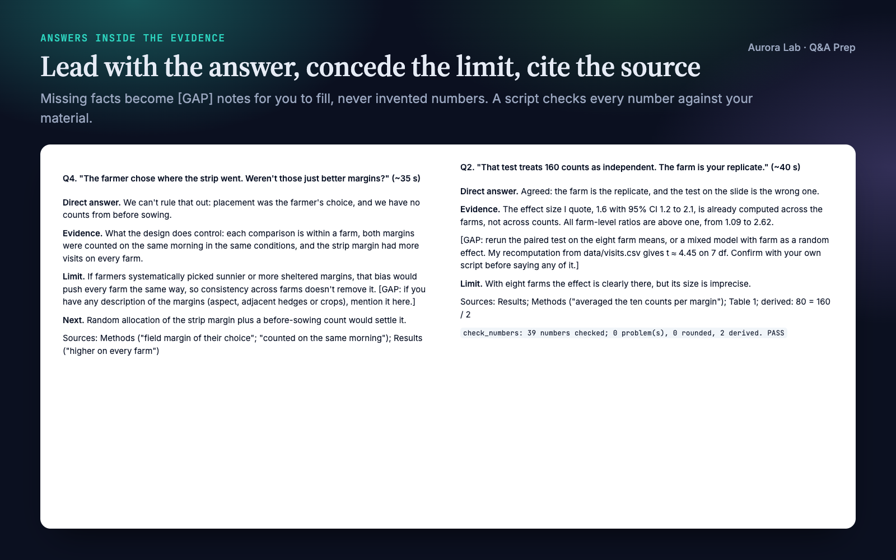
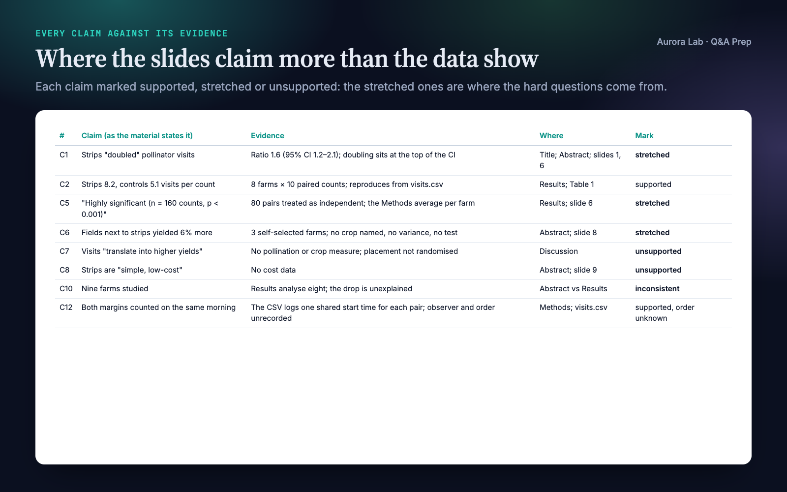
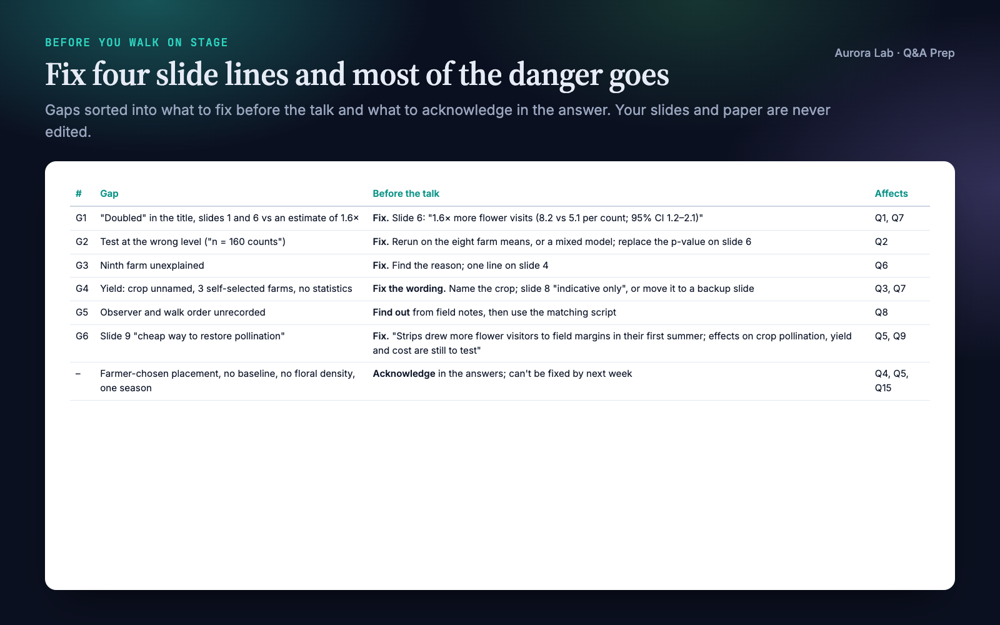
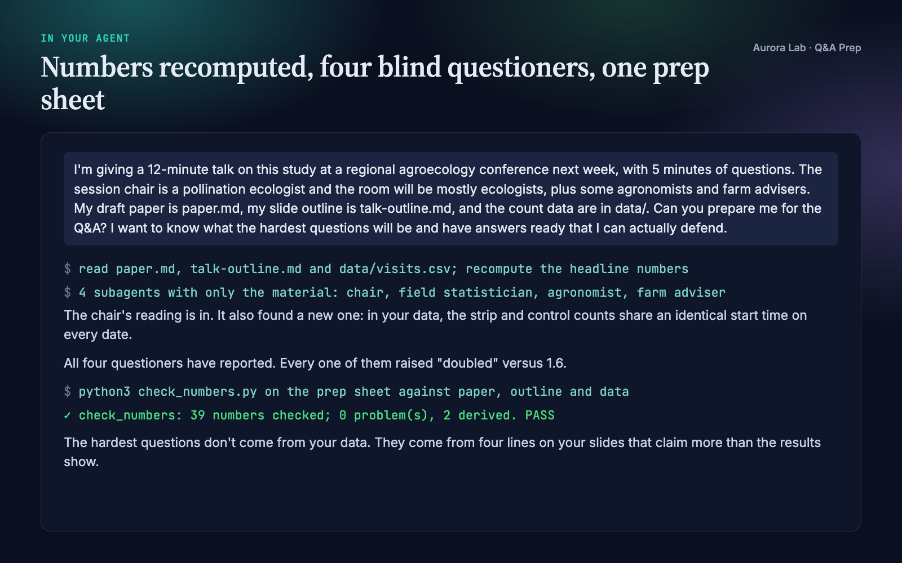

Overview
The questions after a research talk aren't random. They go where the material is exposed: a headline stronger than its estimate, a test on the wrong unit, a sample nobody explained, a choice that invites an alternative explanation. You can't see those spots in your own work, because you know what you meant. Q&A Prep makes your agent find them first and prepare answers you can defend in the room.
- Every claim against its evidence. Each claim a listener could challenge is listed with its number, n, uncertainty and location, and marked supported, stretched or unsupported. Numbers that differ between abstract, slides and paper are caught.
- Questions predicted, then ranked. From the exposed points, a list of research question angles and the questions your setting brings, plus fresh questioner subagents that see only your material. Fifteen or more questions (ten for a poster session), ranked by how likely and how damaging they are.
- Answers that stay inside your material. Each leads with the direct answer, then the evidence, then the limit you concede before the questioner does, with a Sources line for every fact. Anything your material doesn't contain becomes a
[GAP]note for you, never an invented number or citation. - A number check that runs. A bundled script finds every number in the answers in your material, flags any it can't, and verifies declared derivations.
- What to fix before you walk on: gaps to close, backup slides built only from what you have, scripts for the hard moments, a one-page lectern card, and a mock Q&A if you want one.
Pairs well with: Poster Layout and other talk skills. Neither is needed.
Quick start
- Get the skill from Agensi and add it to your agent (Claude Code, Codex CLI, Cursor, Gemini CLI or any agent that loads SKILL.md skills).
- Have Python 3.10+ for the number check (standard library only, nothing to install).
- Point it at your material and say who will be in the room and how long the Q&A is.
Example requests:
- "I'm presenting this paper at a conference next week, 12 minutes plus 5 for questions. Prepare me for the Q&A."
- "My thesis defence is in three weeks. Here are my chapters and my committee's fields: what will they ask, and how do I answer without overselling?"
- "Poster session tomorrow. Give me the 30-second version and the five questions visitors will ask."
- "Run a mock Q&A on my job talk slides: one question at a time, and tell me where I overclaim."
Want to see a full run first? The skill ships the demo's material and the prep sheet it produced in examples/.
What you get
Everything below comes from one real run: a fresh agent session with only this skill installed, given the request shown in the last image ($1.61, about four minutes). The material was ours: a made-up draft paper, a 12-minute slide outline and the count data for a field study of sown wildflower strips and pollinator visits on eight farms. We planted six weak spots: "doubled" in the title against an estimate of 1.6 (95% CI 1.2 to 2.1), a test on 160 counts when the farm is the unit, nine farms in the abstract but eight in the results, a yield claim from three self-selected farms, strip margins chosen by the farmers, and one season of dry mornings.
The run found all six, and one we hadn't planned: strip and control counts logged with identical start times, so nobody knows who walked which margin first. It recomputed the headline numbers from the raw data (they matched the paper), ran four questioner subagents (the chair, a field statistician, an agronomist, a farm adviser), ranked 18 questions and drafted 11 answers. Farm-level statistics the paper doesn't report went into [GAP] notes for the speaker to confirm, not into the answers. The number check passed on 39 numbers. We checked the farm-level values it computed against the data ourselves.





How it works
- Material and setting. Everything you give it is read. The setting (format, Q&A length, chair, what's at stake) and the groups in the room are written down, or inferred and listed as assumptions.
- Claims mapped to evidence. Each challengeable claim with its number, n, uncertainty and location, marked supported, stretched or unsupported; then the exposures, the places a sharp questioner will go.
- Questions predicted. At least one per exposure, a sweep of research question angles and setting-specific questions, and fresh questioners who see only your material. Ranked by likelihood × damage.
- Answers drafted. Direct answer, evidence, limit, and optionally what would settle it; 20 to 45 seconds spoken (up to 90 for a defence); a Sources line and
[GAP]notes. - Backup slides and gaps. Three to five backup slides from existing figures and tables; gaps sorted into fix-before-the-talk and acknowledge-in-the-answer, with softer wording for slides that overclaim.
- Hard moments. Scripts tied to this talk for a question that hits a real flaw, one you can't answer, a comment instead of a question, a multi-part or hostile question, and the setting's own cases.
- Number check. The bundled script, then a re-read of every answer for wording stronger than the evidence.
- Rehearsal (optional). A mock Q&A, one question at a time, with short feedback after each answer.
- Delivery. The prep sheet, and in the chat the three most dangerous questions, their one-line answers and the gaps to close.
The integrity rules
Answers use only what your material contains. Gaps are flagged, never filled. An answer keeps the material's own hedges, intervals and scope, and when the material itself overclaims, that becomes the first question to prepare for. Derived numbers show their working. Every fact is located.
Settings it knows
| Setting | What it adds |
|---|---|
| Conference talk | Short Q&A, a 15-second version of each top answer |
| Poster session | A 30-second and a 2-minute walk-through, the questions every visitor asks |
| Thesis defence or viva | Contribution in one sentence, limitations first, what you'd do differently, your role, each examiner's field (never guessed) |
| Job talk | Research programme, independence, funding, teaching, collaborations |
| Grant panel | Feasibility, main risk and fallback, budget lines |
| Written reviewer or committee Q&A | Each comment answered point first, with the change made and where, or the reason for not changing |
The number check
scripts/check_numbers.py (Python 3.10+, standard library only) reads the prep sheet and your material (text files or folders; PDFs need a text extraction first) and reports every number in the Answers, Backup slides and Lectern card sections:
| Status | Meaning |
|---|---|
| FOUND | The value appears in your material. |
| ROUNDED | A material value rounds to it, or it is a material fraction written as a percentage: confirm it. |
| DERIVED | Declared as derived: 3.1 = 8.2 - 5.1, with the operands in your material and the arithmetic right. |
| UNSOURCED | Not in your material: source it, derive it, or remove it. |
| BAD-DERIVE | A derivation whose operands aren't in the material or whose arithmetic is wrong. |
Headings, [GAP] notes, locators such as "Table 2" or "slide 7" and list numbers are skipped. It exits with an error when anything is UNSOURCED or BAD-DERIVE.
Files it reads and writes
| File | Read or written |
|---|---|
| Your material | Read: paper, slides, poster, abstract, results files, reviewer comments. Never edited. |
research/claims.md, research/results/*.json, research/paper/, research/figures/<figure>.md |
Read when a research/ folder exists. |
research/talks/qa-prep-<talk>-<date>.md |
Written: the prep sheet. Without a research/ folder it goes next to the material. |
| A text extraction of a PDF or slide file | Written to a temporary file for the number check and deleted at the end. |
The prep sheet holds: a summary, the evidence map, the exposures, the ranked question bank, the answers with sources, backup slides, gaps to close, hard-moment scripts, the lectern card, rehearsal notes and the number check result.
FAQ
Which agents does it work with?
Any agent that loads SKILL.md skills, including Claude Code, Codex CLI, Cursor and Gemini CLI. It works best where the agent can run subagents or start a fresh session; elsewhere it plays each questioner in a separate pass and says so.
Will it make up answers to sound convincing?
No. Every number, result and citation in an answer must come from your material, with its location. Where a good answer needs something you haven't given it, a [GAP] note tells you what to supply, and the number check flags any number it can't find in your material.
What does the number check actually check?
Provenance, not meaning: that each number appears in your material (allowing rounding and percentages) and that declared derivations are right. Wording that claims too much is caught by the agent's re-read against the evidence map.
Does it work for a thesis defence or a job talk?
Yes. Tell it your examiners' fields and anything you know about their work; it never guesses an examiner's views.
Can I rehearse with it?
Yes. Ask for a mock Q&A. It is text-based unless your agent can take voice.
Will it change my slides or paper?
No. It suggests wording for the lines that will draw hard questions and leaves the edits to you.
How long does it take?
Our demo, with four questioner subagents, took about four minutes. Each questioner is a separate agent run, so it uses several times the tokens of a single pass.
Limitations
- It can't know facts that aren't in your material (why a sample was dropped, an examiner's views, literature you haven't cited); those become
[GAP]notes for you. - Questioners are simulated. A real room will still surprise you; a run-through with a colleague remains worth doing.
- The number check verifies provenance, not meaning: a small integer that appears anywhere in your material passes.
- PDFs and slide files need a text extraction (done by the agent when a tool such as
pdftotextis available). - The mock Q&A is text-based unless your agent can take voice.
- Without subagents the questioners are played in one context, which is less independent; the prep sheet says so.
Changelog
1.0.0 · October 2026 · First release.